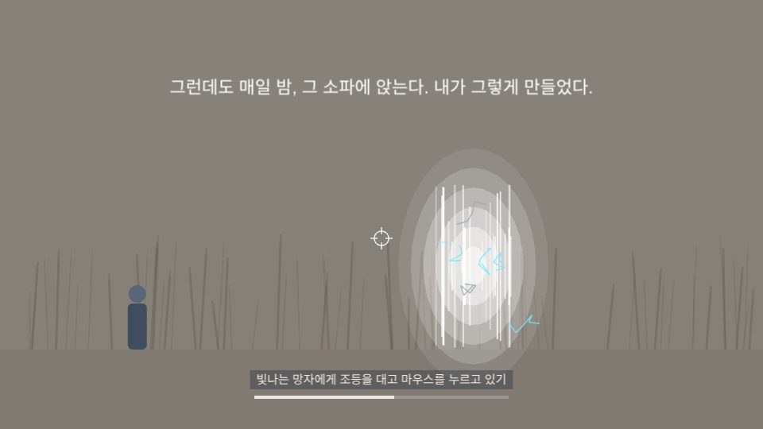

GAME DESIGNER | 신입
오래 남는 순간은 우연이 아니라 설계입니다.
의도한 감정을 규칙, 수치, 레벨로 옮기고, AI와 함께 끝까지 구현하는 게임 기획자 김준현입니다.

메모리 엔더 플레이 영상
영상 준비 중. 아래 버튼으로 바로 플레이할 수 있습니다
영상 준비 중. 아래 버튼으로 바로 플레이할 수 있습니다
의도한 감정을 규칙, 수치, 레벨로 옮기고, AI와 함께 끝까지 구현하는 게임 기획자 김준현입니다.
카드를 누르면 기획 의도와 설계, 플레이하며 고친 기록을 볼 수 있습니다.

기억을 지우는 장의사가 장례를 거부한 망자를 쫓아, 마지막 장례를 치른다. 쌓아 온 감정을 마지막에 플레이어의 손으로 터뜨리는 구조.
온라인 협동 타워 디펜스. 콘텐츠 기획을 맡아 기획서, 데이터테이블, 요청서 순으로 구현까지 연결했다.
"10초 전의 내가 지금의 동료가 된다", 수치로 정답 루트를 고정한 시간 루프 퍼즐 플랫포머.
감정 순서대로 여섯 방을 배치한 추리 비주얼 노벨.